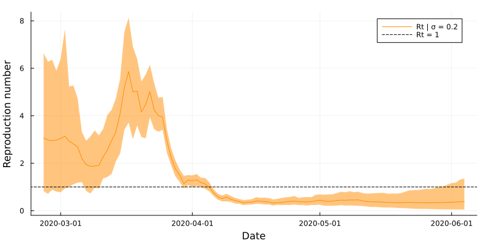
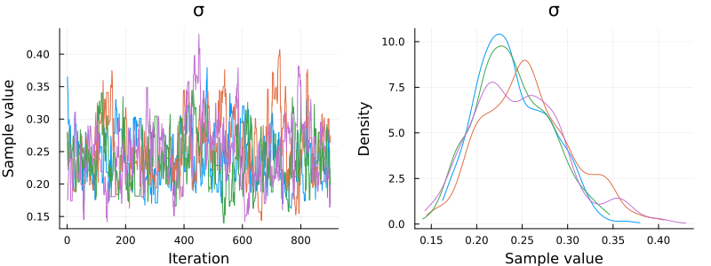
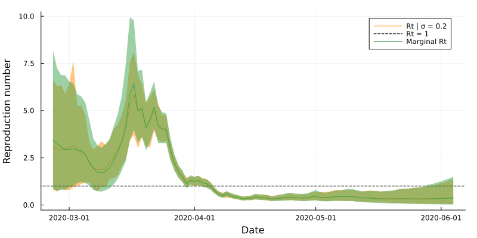

include("../src/LoadData.jl")
Y = loadData("NZCOVID")
using Plots, Measures
bar(Y.date, Y.Ct, color=:darkblue, size=(800,400), xlabel="Date", ylabel="Reported cases", label=false, margins=3mm)8 A simple model
We begin by reproducing the simple epidemic model used to demonstrate the SMC methods. This model should work with any
Recall that we model \(\log R_t\) with a Gaussian random walk:
\[\log R_t \sim \text{Normal}(\log R_{t-1}, \sigma) \]
and assume reported cases follow the Poisson renewal model:
\[ C_t | R_t, C_{1:t-1}, \theta \sim \text{Poisson}\left(R_t \sum_{u=1}^{t-1} C_{t-u} g_u\right) \]
The sole hidden state is \(R_t\) and the sole parameter is \(\sigma\). We assume that the values of the serial interval PMF \(\omega_u\) are known.
8.1 Setting up
First we load and plot the data:
and write the model as a bootstrap filter:
function simpleModel(σ, Y::DataFrame, opts::Dict)
# Extract frequently used options
T = opts["T"] # Number of time steps
N = opts["N"] # Number of particles to use
L = opts["L"] # Length of fixed-lag resampling
# Define the serial interval
ω = pdf.(Gamma(2.36, 2.74), 1:100) # (Unnormalised) serial interval
ω = ω/sum(ω)
# Initialise output matrices
R = zeros(N, T) # Matrix to store particle values
W = zeros(N, T) # Matrix to store model weights
# Sample from initial distribution
R[:,1] = rand(Uniform(0, 10), N)
# Run the filter
for tt = 2:T
# Project according to the state-space model
R[:,tt] = exp.(rand.(Normal.(log.(R[:,tt-1]), σ)))
# Weight according to the observation model
Λ = sum(Y.Ct[tt-1:-1:1] .* ω[1:tt-1]) # Calculate the force-of-infection
W[:,tt] = pdf.(Poisson.(R[:,tt] .* Λ), Y.Ct[tt])
# Resample
inds = wsample(1:N, W[:,tt], N; replace=true)
R[:, max(tt - L, 1):tt] = R[inds, max(tt - L, 1):tt]
end
return(R, W)
endTo check the model works, we test it at fixed value \(\sigma = 0.2\):
# Specify bootstrap filter options (the {String, Any} term allows us to use any type of value in future)
opts = Dict{String, Any}("N" => 10000, "T" => 100, "L" => 50)
# Run the model
σ = 0.2
(R, W) = simpleModel(σ, Y, opts)
# Process the results and plot
include("../src/Support.jl")
(meanRt, medianRt, lowerRt, upperRt) = processResults(R)
pltR = plot(Y.date, meanRt, ribbon=(meanRt-lowerRt, upperRt-meanRt), color=:darkorange, size=(800,400), xlabel="Date", ylabel="Reproduction number", margins=3mm, label="Rt | σ = 0.2")
hline!([1], color=:black, linestyle=:dash, label="Rt = 1")

8.2 Estimating \(\sigma\)
We use the simple PMMH algorithm to estimate \(\sigma\). We need to specify some additional options for this:
opts["N"] = 500 # We don't need as many particles when running PMMH
opts["nChains"] = 4
opts["nSamples"] = 1000
opts["paramPriors"] = [Uniform(0, 1)] # A vector of prior distributions for the parameter(s)
opts["proposalDists"] = [(x) -> Truncated(Normal(x, 0.03), 0, 1.0)] # A vector of proposal distributions for the parameter(s)
opts["initialParamSamplers"] = [Uniform(0.05, 0.3)] # A vector of distributions to sample initial parameter values fromWe also want to check that we are using a sufficient number of particles to obtain good estimates of \(\ell(\theta|y_{1:T})\):
include("../src/Likelihood.jl")
(sd, logliks) = estimateStdDevLogLik(100, simpleModel, σ, Y, opts; showProgress=false)
println("Standard deviation of log-lik estimates = $sd")Standard deviation of log-lik estimates = 0.7999741554449409Now we are ready to run the PMMH algorithm:
include("../src/PMMHSimple.jl")
(θ, diagnostics) = multipleSimplePMMH(simpleModel, Y, opts; showProgress=false)and analyse it using the MCMCChains package:
using MCMCChains
C = Chains(θ[100:end,:,:], ["σ"]) # Removing the first 100 samples as a windinChains MCMC chain (901×1×4 Array{Float64, 3}):
Iterations = 1:1:901
Number of chains = 4
Samples per chain = 901
parameters = σ
Summary Statistics
parameters mean std naive_se mcse ess rhat
Symbol Float64 Float64 Float64 Float64 Float64 Float64
σ 0.2454 0.0458 0.0008 0.0031 174.4910 1.0244
Quantiles
parameters 2.5% 25.0% 50.0% 75.0% 97.5%
Symbol Float64 Float64 Float64 Float64 Float64
σ 0.1701 0.2123 0.2409 0.2754 0.3471
so the posterior mean of \(\sigma\) is approximately 0.24 with a 95% credible interval of \((0.16, 0.34)\). The \(\hat{R}\) statistic is less than 1.05, suggesting the chains have converged. To double check the output, we can also plot the chains and posterior density estimate:
using StatsPlots, Measures
plot(C, size=(800,300), margins=3mm)

8.3 Marginalising out \(\sigma\)
We are ultimately interested in estimates of \(R_t\) after marginalising out uncertainty about \(\sigma\), which has shown to be important for model calibration and correct uncertainty quantification (Steyn and Parag 2024).
We generate samples from this marginal posterior distribution by sampling \(\theta' \sim P(\theta|C_{1:T})\) (obtained by PMMH), sampling \(R_t \sim P(R_t|C_{1:T}, \theta')\), and repeating.
include("../src/MarginalPosterior.jl")
opts["posteriorNumberOfParticles"] = 1000 # Number of particles to use in each bootstrap filter
opts["posteriorParamSamples"] = 100 # Number of unqiue parameter values to use
R = marginalPosterior(simpleModel, θ[100:end,:,:], Y, opts)
(meanRt, medianRt, lowerRt, upperRt) = processResults(R)
plot!(pltR, Y.date, meanRt, ribbon=(meanRt-lowerRt, upperRt-meanRt), label="Marginal Rt")

8.4 Model comparison
We first modify the bootstrap filter to sample from the posterior predictive distribution by adding the following code:
# Sample from the posterior predictive distribution
C = zeros(N, T)
for tt = 2:T
Λ = sum(Y.Ct[tt-1:-1:1] .* ω[1:tt-1])
C[:,tt] = rand.(Poisson.(R[:,tt] .* Λ))
end
# Store in a tidy fashion
X = zeros(N, T, 2)
X[:,:,1] = R
X[:,:,2] = CCode
function simpleModel(σ, Y::DataFrame, opts::Dict)
# Extract frequently used options
T = opts["T"] # Number of time steps
N = opts["N"] # Number of particles to use
L = opts["L"] # Length of fixed-lag resampling
# Define the serial interval
ω = pdf.(Gamma(2.36, 2.74), 1:100) # (Unnormalised) serial interval
ω = ω/sum(ω)
# Initialise output matrices
R = zeros(N, T) # Matrix to store particle values
W = zeros(N, T) # Matrix to store model weights
# Sample from initial distribution
R[:,1] = rand(Uniform(0, 10), N)
# Run the filter
for tt = 2:T
# Project according to the state-space model
R[:,tt] = exp.(rand.(Normal.(log.(R[:,tt-1]), σ)))
# Weight according to the observation model
Λ = sum(Y.Ct[tt-1:-1:1] .* ω[1:tt-1]) # Calculate the force-of-infection
W[:,tt] = pdf.(Poisson.(R[:,tt] .* Λ), Y.Ct[tt])
# Resample
inds = wsample(1:N, W[:,tt], N; replace=true)
R[:, max(tt - L, 1):tt] = R[inds, max(tt - L, 1):tt]
end
# Sample from the posterior predictive distribution
C = zeros(N, T)
for tt = 2:T
Λ = sum(Y.Ct[tt-1:-1:1] .* ω[1:tt-1])
C[:,tt] = rand.(Poisson.(R[:,tt] .* Λ))
end
# Store in a tidy fashion
X = zeros(N, T, 2)
X[:,:,1] = R
X[:,:,2] = C
return(X, W)
end8.5 A very very simple model
# Setup:
N = 100000 # Number of particles
ω = pdf.(Gamma(2.36, 2.74), 1:100) # Serial interval
Y = loadData("NZCOVID") # Load data
R = zeros(N, 100) # Matrix to store particle values (of log Rt)
# Run the bootstrap filter:
R[:,1] = log.(rand(Uniform(0, 10), N)) # Sample initial values
for tt = 2:100
R[:,tt] = rand.(Normal.(R[:,tt-1], 0.2)) # Project (log) Rt
Λ = sum(Y.Ct[(tt-1):-1:1] .* ω[1:(tt-1)]) # Calculate the force of infection
W = pdf.(Poisson.(Λ * exp.(R[:,tt])), Y.Ct[tt]) # Calculate weights
R[1:N, max(tt-40, 1):tt] = R[wsample(1:N, W, N), max(tt-40, 1):tt] # Resample
end